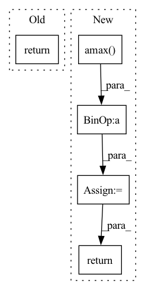

Pattern ID :487

Before Change
self.register_buffer("beta", torch.zeros(dim))
def forward(self, x):
return F.layer_norm(x, x.shape[-1:], self.gamma, self.beta)
class ChanLayerNorm(nn.Module):
After Change
def forward(self, x):
if self.stable:
x = x / x.amax(dim = -1, keepdim = True).detach()
var = torch.var(x, dim = -1, unbiased = False, keepdim = True)
mean = torch.mean(x, dim = -1, keepdim = True)
return (x - mean) * (var + self.eps).rsqrt() * self.g
class ChanLayerNorm(nn.Module):
def __init__(self, dim, eps = 1e-5, stable = False):
In pattern: SUPERPATTERN
Frequency: 3
Non-data size: 5
Instances
Fragment ID: 2736761
Project Name: lucidrains/imagen-pytorch
Commit Name: 5fca6872dad964bc20f6213aec267487cafc1a77
Time: 2022-07-18
Author: lucidrains@gmail.com
File Name: imagen_pytorch/imagen_pytorch.py
M Class Name: LayerNorm
N Class Name: LayerNorm
M Method Name: forward(2)
N Method Name: forward(2)
M Parent Class: nn.Module
N Parent Class: nn.Module
M File Name: imagen_pytorch/imagen_pytorch.py
N File Name: imagen_pytorch/imagen_pytorch.py
M Start Line: 380
M End Line: 380
N Start Line: 381
N End Line: 386
'>
Before Change
// compute in log space for numerical stability
return np.exp(x - logsumexp(x, axis=axis, keepdims=True))
def log_softmax(x, axis=None):
After Change
x = _asarray_validated(x, check_finite=False)
x_max = np.amax(x, axis=axis, keepdims=True)
exp_x_shifted = np.exp(x - x_max)
return exp_x_shifted / np.sum(exp_x_shifted, axis=axis, keepdims=True)
def log_softmax(x, axis=None):
'>
Fragment ID: 2736753
Project Name: scipy/scipy
Commit Name: 5ad18b4757b0078558ac313524b1e7e33e87db96
Time: 2022-05-18
Author: mlinaric@vt.edu
File Name: scipy/special/_logsumexp.py
M Class Name: AnonimousClass
N Class Name: AnonimousClass
M Method Name: softmax(2)
N Method Name: softmax(2)
M Parent Class:
N Parent Class:
M File Name: scipy/special/_logsumexp.py
N File Name: scipy/special/_logsumexp.py
M Start Line: 214
M End Line: 214
N Start Line: 220
N End Line: 223
'>
Before Change
def get_positional_features_gamma(positions, features, seq_len):
center_widths = 2 ** torch.arange(1, features + 1, device = positions.device).float()
center_widths = center_widths - 1
return (center_widths[None, ...] > positions.abs()[..., None]).float()
def get_positional_embed(seq_len, feature_size, device):
distances = torch.arange(-seq_len + 1, seq_len, device = device)
After Change
rate = mean / stddev ** 2
probabilities = gamma_pdf(positions.float().abs()[..., None], concentration, rate)
probabilities = probabilities + eps
outputs = probabilities / torch.amax(probabilities)
return outputs
def get_positional_embed(seq_len, feature_size, device):
distances = torch.arange(-seq_len + 1, seq_len, device = device)
'>
Fragment ID: 2736772
Project Name: lucidrains/enformer-pytorch
Commit Name: 0dc2ffafddd23e90339d922d2dd02ee5500ce5de
Time: 2021-10-27
Author: lucidrains@gmail.com
File Name: enformer_pytorch/enformer_pytorch.py
M Class Name: AnonimousClass
N Class Name: AnonimousClass
M Method Name: get_positional_features_gamma(6)
N Method Name: get_positional_features_gamma(3)
M Parent Class:
N Parent Class:
M File Name: enformer_pytorch/enformer_pytorch.py
N File Name: enformer_pytorch/enformer_pytorch.py
M Start Line: 46
M End Line: 49
N Start Line: 51
N End Line: 65